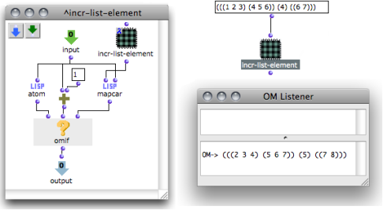

OpenMusic DocumentationHiérarchie de section : OM 6.6 User Manual > Visual Programming II > Abstraction > Recursive Patches > Recursive Trees
OpenMusic DocumentationHiérarchie de section : OM 6.6 User Manual > Visual Programming II > Abstraction > Recursive Patches > Recursive Trees
Navigation : page précédente | page suivante
Attention, votre navigateur ne supporte pas le javascript ou celui-ci à été désactivé. Certaines fonctionnalités de ce guide sont restreintes.
Recursive Treatment of Tree Structures
Recursive Treatment of Tree Structures
Recursion is often applied to tree structures, such as lists. Indeed, a list can be described as a tree, whose components are either leaves , or nodes . A leaf is a termination of a tree, a node is another list that can, also, contain leaves of nodes.
Example : Recursive Treatment of a Multiple Level List
We would like to add 1 to each number in a tree with many sublists : 1 + ( ((1 2 3)(4 5 6)) (4) ((6 7))) ) .
In other words, we want to increment – increase the value of – the terminal items of the list. But we cannot just apply om+1 to the list : om+ cannot reach each atom directly. It must go through each level of the tree.
We will apply the following recursive function to the tree : IncrListElements (LIST) = for each ELEMENT in the LIST, do :
- "If element is an atom, then return element + 1." This is the termination condition.
- "Else, apply IncrListElement to the elements." This is the recursive call to IncrListElements.
The whole tree is ran through and all terminal items are incremented. Hence, the termination condition of a recursive function, when applied to a tree structure, is to reach a leaf, or extremity of a tree.
Implementation of IncrListElements in OM
This patch illustrates the previous case :
"Input" yields values or lists of values to be processed.
If an element is an atom, "input" is incremented directly.
If an element is not an atom, – that is, a list –, the patch is applied recursively to each element of the list...

When the patch is called on the list, each atom is incremented.
Mapcar allows to apply the patch on "lambda" mode successively to each element of a list. An alternative would be using an OMLoop to call the sub patch successively on each element of the list.
More Info about Lambda Mode :
About OMLoop :
Références :
Plan :
Navigation : page précédente | page suivante
A propos...(c) Ircam - Centre Pompidou